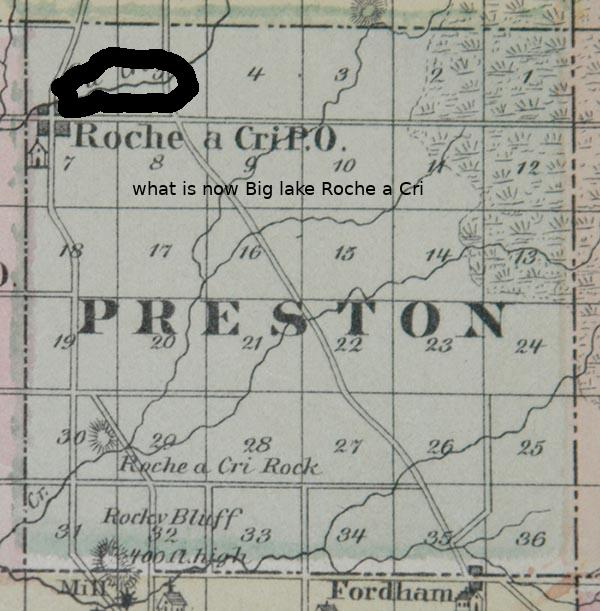

Big Lake Roche is located in the township of Preston in Adams county Wisconsin. The lake is approximately 225 acres. Its size is actually determined where you draw the line between lake and wetlands. The max depth is 20 feet and the average depth is 6 feet. Water clarity is listed as moderately clear with a sandy bottom. The shallow area east of Hwy 13 where Big Roche Creek feeds it has slowly silted in over the years leaving more of a "mucky" area.
The official name of the small town that settled on the creek was named "town of Roche" A family with the last name of Cotton settled the area. Their small crude lumber mill formed a small pool to float logs. The village is said to have a tavern, some dwellings, a trading post and even a blacksmith. The post office was located where the Lake County Shop is located today.
The name Roche town never stuck, it was simply known as Cottonville to everyone. With larger more productive mills in the area,namely in Arkdale and Friendship the small town and Mill went under, literally. A few periods of high water washed the Mill away. This and the fact it was never converted to grist lead to it's demise.
The town and it's inhabitants are long gone today. The historic Cottonville cemetery is still intact with the area's first settlers grave stones in place. It is well maintained and very much worth a visit.
Highway 13 construction began in the early 1920's it actually follows the Pinery trail, a well known north south route from the Friendship area to Grand Marsh (what is now Wisconsin Rapids) It was a "leg" of the long route to the north woods. Rabbit rock was a day's travel to Grand Marsh. A small tavern or inn was a popular layover near Big Creek Roche. It was located in the area where Mo's bar is today. The building of the new road coincides with the dredging and making of the lake itself.
The days of crude hand built wooden bridges and dams was coming to an end. Stronger more permanent cement structures replaced them. George Polivka was no stranger to "modern" dam building. He purchased the area in Friendship where Little lake Roche creek flows. What is known as Friendship lake today was simply called the "pond" at that time.
George went to work building a hydro-electric dam. His efforts were a wild success; he was able to electrify the 80 acre town and the surrounding area. To understand this you must remember at this period of time electricity was not available to rural areas of the nation. Larger cities however did have the new luxury, imagine the convenience of having a radio and Edison light in the barn. George was a true hands on innovator. The story goes, after a major ice storm took out lines in the area he amazingly returned power within 24 hours. The idea of a hydroelectric dam at that time was a technological wonder.
George sold his successful dam project in Friendship to Adams power and light in 1914. He now had money, experience, and most importantly a vision. He took a gamble and purchased the area we now know as Big lake Roche. The landscape with it's high banks to the north and the new HWY 13 bridge embankment would help contain a natural impoundment (also known as a reservoir*.) The area was surveyed, boat landings installed, flooded,fish stocked and similar development to to "New Rome" just to the north. New modern power equipment made the dredging and excavation possible. The lake was made.
The 1920's was a time of boom all over the nation. The Indian wars were long gone. Land was being gobbled up. Automobile travel was now the norm. Roads were passable and even marked. The newly formed middle class had new forms of financing and more importantly leisure time. Recreation travel was a new concept, car camping was all the rage. What more prized than the lakefront stay on what was marketed as the "north woods". The rush to the populated areas was followed by the novel idea of travel out of the city. I like to think the development of the lake and its water front was a noble environmental experiment for the masses. But Being realistic, I imagine it was most likely a money making venture for investors.
Not much has really changed since the inception of the lake and its development. The true baby boomers returning from WW-2 snapped up what was left of the properties. They drank a lot, built docks improving the lake front shacks with indoor plumbing and more up to date heating. New high horse powered outboards made the sport of water skiing possible. Like most man made lakes it "ages" more quickly than a naturally formed bodys of water. The 1950s brought the invasive species plants to the lake. Arsenic from the surrounding farmers was dumped into the lake to control the new problem. In an attempt to curb unwanted weed growth today's mechanical, "cutters" are employed to help with the ongoing weed problem during the growing season.
The dam itself is now owned by the (LAG) Lake Association Group a collective group of people that live on the lake. Flow rate and discharge volume of water is sent via Wi-Fi to a remote computer. Lake water level and flow is then adjusted by hand to control a vertical gate (more modern systems use a powered roller gate)
Big lake Rochre a Cri will continue to have challenges in the coming decades. Massive growth of invasive species and new plants species, zebra mussels, the rusty craw fish infestation, unwanted fish species, lampreys. And yet even more issues, like Shoreline erosion, most notably of undeveloped shoreline (i.e) no "rip rap areas" on the bank is a major concern. The aforementioned water way east of HWY 13 can not be harvested, dredged or even developed. This area is designated wetlands by the DNR. However it can be "skimmed" at various times if approval is made. Blue Green algae is toxic to humans and wildlife as well This is also of major concern. This lake is not only in its plight to save itself. Most if not all, small Lakes in Wisconsin have or will face the same dilemma. More boat traffic and the bigger wakes of modern "lake craft" that use the lake are a hot debate. The damn is up for paint job in 2023.